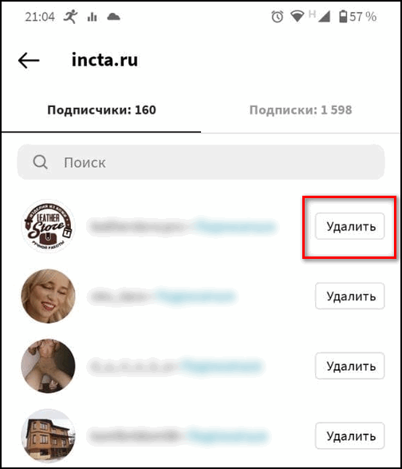
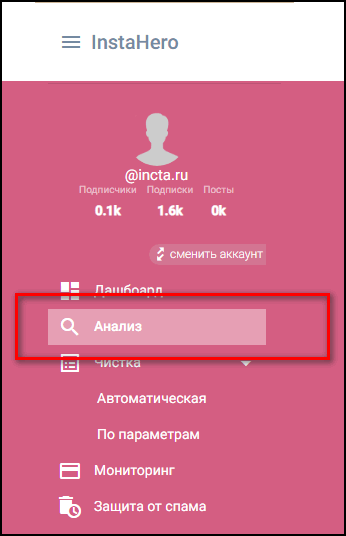
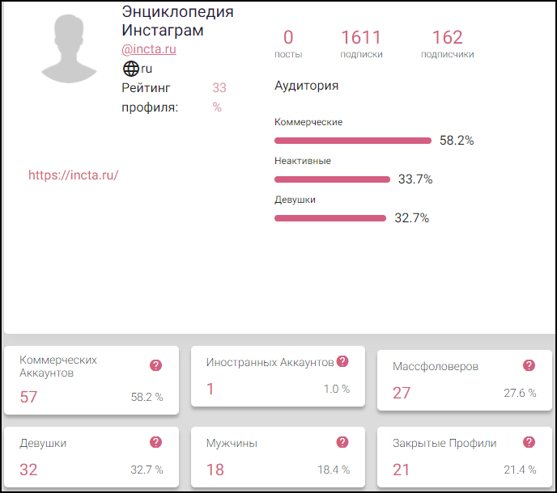
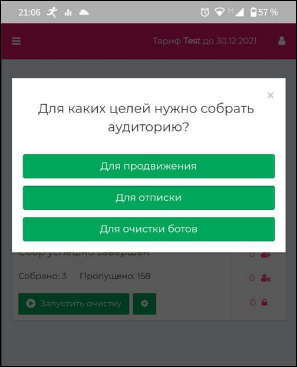
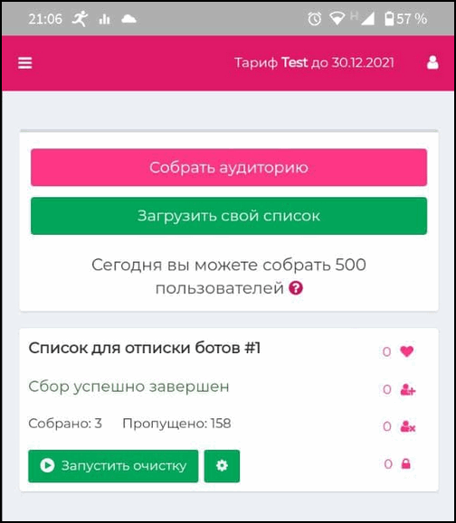
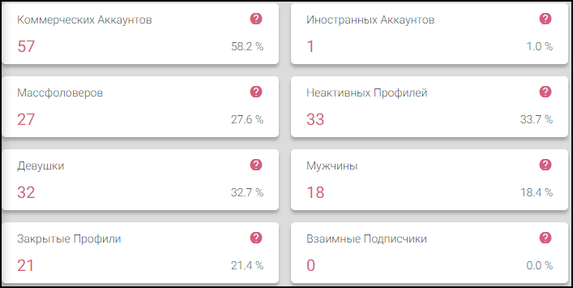

Как удалить подписчиков в Инстаграме: через телефон и компьютер

Быстро удалить подписчиков в Инстаграме* помогут онлайн-сервисы, которые направлены на чистку учетной записи. Но у такого автоматизированного способа есть недостаток: социальная сеть может заблокировать страницу, подробности ниже в статье.
Как убрать неактивных подписчиков в Инстаграме*
Неактивные – это те подписчики, которые не оставляют лайки и комментарии, давно забросили свои аккаунты или же сделали свой профиль закрытым. Недостаток в том, что даже такие фанаты входят в список потенциальной аудитории и повлияют на уровень вовлеченности в статистике.
Чтобы удалить из подписчиков в Инстаграме* человека, нужно:
- Перейти в свой профиль – выбрать сверху: «Подписчики».
- Напротив никнейма нажать: «Удалить».

Или второй вариант – заблокировать. Это способ уже неактуален, так как влияет на лимиты страницы. Но до сих пор используем, если нужно удалить списком ботов и фейков.
У владельца профиля есть несколько возможностей, как очистить свой профиль:
- самостоятельно, составив таблицу;
- через онлайн-сервисы;
- с помощью мобильных приложений.
В последнем случае, приложения не анализирую активность на чужом аккаунте. Поэтому стоит указать, что это касается полной очистки подписчиков или постепенного удаления по 10-20 человек из списка.
Через онлайн-сервисы
С помощью онлайн-сервиса можно удалить подписчика не блокируя в Инстаграме*. Такой пользователь сможет заново подписаться, если его страница была ошибочно воспринята как «неактивная».
| InstaHero | Можно удалить подписчиков через вкладку «По параметрам». Указать количество публикаций в профиле, наличие аватарки. |
| SpamGuard | Анализирует страницу и показывает, какое количество подписчиков неактивны. Умные алгоритмы найдут самых «токсичных» подписчиков и безопасно удалит их. |
| Zengram | Удаляет только пользователей из подписок, но можно очистить перечень тех, кто уже давно не размещал публикаций, не делился Историями. |
| Проводит полную аналитику блога, показывая какое количество из фанатов являются ботами. | |
| Instaplus.pro | Сервис показывает неактивных и нецелевых подписчиков, удаляя их из профиля, возможно превышение лимита, будьте аккуратны при использовании данного сайта. |
С компьютерной версии проще использовать сервис InstaHero, который показывает полную информацию об аккаунте:
- Зайти в сервис – создать аккаунт.
- Подключить свою учетную запись Инстаграма*.

- Выбрать: «Анализ» - подождать, пока сервис соберет полную информацию.
- Посмотреть количество неактивной аудитории.

- Чистка – По параметрам.
- Указать базовые настройки и запустить.
В разделе «Журнал» появятся сведения о ходе удаления. Между каждой операцией есть небольшой промежуток, который нужен для соблюдения лимитов.
Через телефон
С помощью сервиса InstaPlus, которые доступен на мобильные устройства, можно удалить список подписчиков. Его можно установить с помощью APK-файла, который доступен на официальном сайте. Как воспользоваться:
- Перейти по ссылке на сайт.
- Выбрать: «Скачать на телефон» (с помощью QR-кода или получить файл на компьютер).
- Установить и открыть – выбрать способ анализа: «Для очистки ботов».

- Подождать, пока сервис проведет анализ – запустить удаление.

Далее, владелец страницы может указать, какую категорию пользователей нужно убрать со страницы. У такого способа есть преимущество перед компьютерной версией: не нужно подключать свою учетную запись, можно проверять конкурентов.
Определить накрученных подписчиков в Инстаграме*
Определить, кто из подписчиков накрученный у конкурентов, возможно через раздел: «Подписчики», где показан весь список фанатов. Или через сервис InstaHero, где показана информация о массфоловинге. Как определить накрутку самостоятельно:
- Зайти в свой профиль или аккаунт конкурента.
- Нажать: «Подписчики» - посмотреть, какое количество фанатов боты и фейки.
- Перейти к комментариям – посмотреть тип отзывов.
Если у конкурента на странице есть накрученные фанаты, то они оставляют одинаковые комментарии, ставят смайлы вместо текста. Поэтому, это один из способов, как определить накрутку.
В своем профиле провести аудит и анализ еще проще: если постоянно приходят уведомления о подписке от страниц, где нет фотографий, публикаций и много подписок – это установленная накрутка. Ей могут воспользоваться не только владельцы блогов, но и их конкуренты.
Удалить накрученных подписчиков
Удалить подписчиков, которые были накручены можно либо вручную, либо воспользоваться онлайн-сервисами. Это настройки, которые направлены на очистку ботов, потому что отдельного пункта для накрученных подписчиков нет. Чтобы убрать с помощью InstaHero:
- Перейти в сервис – зарегистрироваться.
- Подключить свой аккаунт Инстаграм* – выбрать: «Чистка».

- Автоматически – подтвердить запуск.
Со страницы будут удалены все аккаунты, которые соответствуют критериям: «Фейки» и «Боты». Если воспользоваться вариантом: «Удалить по параметрам», то нужно выделить список тех подписчиков, которые останутся неудаленными. Преимущество отписки автоматически и вручную в том, что другой пользователь не узнает, что его убрали из перечня фанатов. Но если воспользоваться вариантом: «Блокировать», владелец второй страницы сможет узнать, если перейдет в блог, где его отправили в бан.
Исчезнут ли лайки после удаления
После удаления комментарии и лайки не будут удалены. Но в списке тех, кому понравилось или кто прокомментировал – страница не отобразится. Она останется в счетчике, но сам текст не продемонстрирован.
Если просто удалить пользователя из подписок, то он сможет заново подписаться, а его ранее отправленные комментарии, поставленные лайки остаются без изменений.
Лайки и комментарии будут удалены в случае:
- взаимная блокировка;
- если владелец страницы, где размещена публикация, скрыл или удалил запись;
- функция: «Профиль с ограниченными правами».
В остальных ситуациях, комментарии и лайки будут доступны к просмотру. Последний вариант относится к новой функции Инстаграм*, с помощью которой можно не удалять и не отписывать фаната, а сделать его комментарии скрытыми от посетителей профиля. Причем, автор не узнает, что его временно заблокировали.